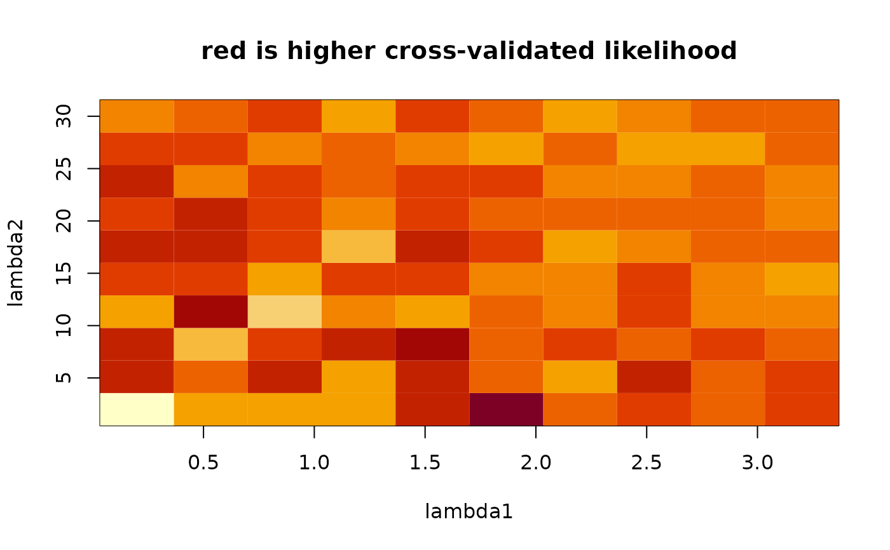

scan.l1l2.RdThis function generates a grid of values of L1/L2 penalties, then calculated cross-validated likelihood at each point on the grid. The grid can be regular (linear progression of the penalty values), or polynomial (finer grid for small penalty values, and coarser grid for larger penalty values).
numeric vector of length two, giving minimum and maximum constraints on the L1 penalty
numeric vector of length two, giving minimum and maximum constraints on the L2 penalty
Number of values of the L1 penalty in the regular grid of L1/L2 penalties
Number of values of the L2 penalty in the regular grid of L1/L2 penalties
An integer number of processors to use.
power of the polynomial on which the L1/L2 penalty values are fit. ie if polydegree=2, penalty values could be y=x^2, x=1,2,3,..., so y=1,4,9,...
Optional cluster object created with the makeCluster() function of the parallel package. If this is not set, pensim calls makeCluster(nprocessors, type="SOCK"). Setting this parameter can enable parallelization in more diverse scenarios than multi-core desktops; see the documentation for the parallel package. Note that if cl is user-defined, this function will not automatically run parallel::stopCluster() to shut down the cluster.
arguments passed on to cvl function of the penalized R package
This function sets up a SNOW (Simple Network of Workstations) "sock" cluster to parallelize the task of scanning a grid of penalty values to search for suitable starting values for two-dimensional optimization of the Elastic Net.
matrix of cvl values along the grid
range of L1 penalties to scan
range of L2 penalties to scan
A text string indicating the range of L1 penalties
A text string giving the range of L2 penalties
A text string giving the range of cvl values
A note to the user that rows of cvl correspond to values of lambda1, columns to lambda2
Waldron L, Pintilie M, Tsao M-S, Shepherd FA, Huttenhower C*, Jurisica I*: Optimized application of penalized regression methods to diverse genomic data. Bioinformatics 2011, 27:3399-3406. (*equal contribution)
Depends on the R packages: penalized, parallel, rlecuyer
cvl
data(beer.exprs)
data(beer.survival)
##select just 250 genes to speed computation:
set.seed(1)
beer.exprs.sample <- beer.exprs[sample(1:nrow(beer.exprs), 250), ]
gene.quant <- apply(beer.exprs.sample, 1, quantile, probs = 0.75)
dat.filt <- beer.exprs.sample[gene.quant > log2(150), ]
gene.iqr <- apply(dat.filt, 1, IQR)
dat.filt <- as.matrix(dat.filt[gene.iqr > 1, ])
dat.filt <- t(dat.filt)
## Define training and test sets
set.seed(9)
trainingset <- sample(rownames(dat.filt), round(nrow(dat.filt) / 2))
testset <- rownames(dat.filt)[!rownames(dat.filt) %in% trainingset]
dat.training <- data.frame(dat.filt[trainingset, ])
pheno.training <- beer.survival[trainingset, ]
library(survival)
surv.training <- Surv(pheno.training$os, pheno.training$status)
dat.test <- data.frame(dat.filt[testset, ])
all.equal(colnames(dat.training), colnames(dat.test))
#> [1] TRUE
pheno.test <- beer.survival[testset, ]
surv.test <- Surv(pheno.test$os, pheno.test$status)
set.seed(9)
system.time(
output <- scan.l1l2(
L1range = c(0.2, 3.2),
L2range = c(2, 30),
L1.ngrid = 10,
L2.ngrid = 10,
polydegree = 1,
nprocessors = 1,
response = surv.training,
penalized = dat.training,
fold = 4,
positive = FALSE,
standardize = TRUE
)
)
#> 1234123412341234123412341234123412341234123412341234123412341234123412341234123412341234123412341234123412341234123412341234123412341234123412341234123412341234123412341234123412341234123412341234123412341234123412341234123412341234123412341234123412341234123412341234123412341234123412341234123412341234123412341234123412341234123412341234123412341234123412341234123412341234123412341234123412341234
#> user system elapsed
#> 1.178 0.000 1.179
##Note that the cvl surface is not smooth because a different folding of
##the data was used for each cvl calculation
image(
x = seq(output$L1range[1], output$L1range[2], length.out = nrow(output$cvl)),
y = seq(output$L2range[1], output$L2range[2], length.out = ncol(output$cvl)),
z = output$cvl,
xlab = "lambda1",
ylab = "lambda2",
main = "red is higher cross-validated likelihood"
)
